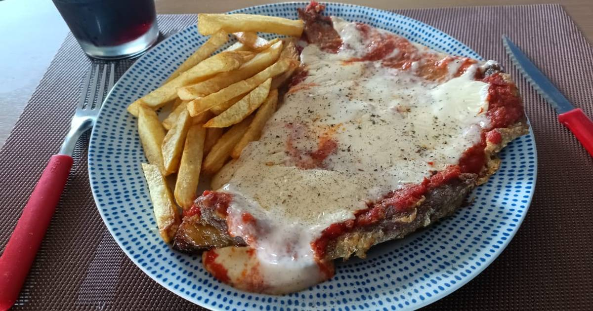

Matambre a la pizza
Home

Como la pizza pero mejorada por los legendarios parrilleros argentinos. Una autentica gordeada con chancho, queso y salsa de tomate
A continuación, la receta en unos simples pasos
Ingredientes:
- 1 Matambre de cerdo
- Tomate cubeteado
- Ajo
- Condimentos
- Muzzarella
Pasos:
La salsa
- Lavarse las manos, no sea cosa que se caiga algún pendejo
- Rehogar el ajo, cuando esté algo doradito, agregar el tomate cubeteado y dejar que hierva
- Agregar un caldo de verdura y una taza de agua. Condimentar con sal, pimienta, pimenton oregano y laurel. Dejar hervir hasta que espese
Para el matambre
- En una parrilla, prender media bolsa de carbón. Cuando la brasa esté lista, y la parrilla bien caliente, colocar el matambre 7 minutos por lado
- Al darlo vuelta, colocar la salsa de tomate y la muzzarela en trozos por arriba, como si fuese una pizza. Tapar con algo que encuentre por ahí
- Dejar que derrita el queso y retirar
- Servir con fritas, pure o ensalada y proceder a engordar como un chancho que no desciende